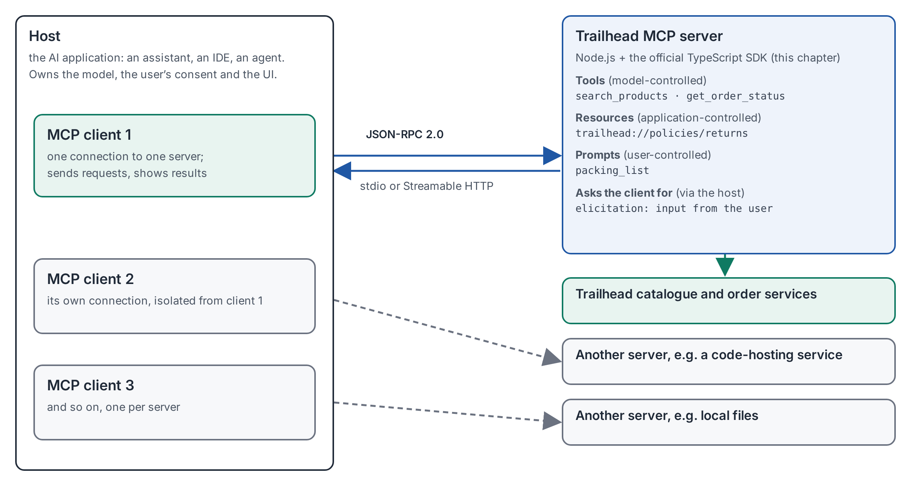

“It provides a universal, open standard for connecting AI systems with data sources, replacing fragmented integrations with a single protocol.”
— Anthropic, “Introducing the Model Context Protocol”1
A tent, an order and a protocol
Lars is planning three nights in Jotunheimen at the end of October. He has two questions for his AI assistant: is there a two-person tent under 4,000 kroner that Trailhead, his favourite Norwegian outdoor-gear shop, actually has in stock, and where is the order he placed last week? He doesn’t have Trailhead’s website open. He is in the assistant’s desktop app, and the assistant answers both questions in one go: the Fjellheim 2 Tent at 3,499 NOK, in stock, rated 4.6; and order TH-100231, shipped with Posten, arriving on Saturday.
Nothing in that exchange involved a browser. The assistant didn’t scrape Trailhead’s product pages or guess at a tracking form. Somebody at Trailhead had written a small server that offers two operations, search_products and get_order_status, each with a name, a plain-language description and a JSON Schema for its inputs. Lars (or his company’s IT department) had added that server to the assistant once. From then on the model could see the two tools, decide when to use them, and call them with structured arguments. The server ran Trailhead’s own code and sent back structured results.
That arrangement is the Model Context Protocol (MCP), and it is the subject of this chapter. MCP matters to a book about WebMCP for two reasons. First, WebMCP borrows MCP’s vocabulary almost word for word: tools, descriptions, input schemas, annotations, results. Chapter 4 quotes the WebMCP specification’s own description of a page that uses it: a Model Context Protocol server that implements tools “in client-side script instead of on the backend”. That description only means something once you know what a backend one looks like. Second, most products that become agent-ready will end up with both: a backend MCP server for the moments when the user is anywhere, and WebMCP tools for the moments when the user is on the site. Trailhead will have both by the end of this book.
So this chapter is practical. We look at MCP’s architecture and its wire format, at what servers and clients offer each other, and at the big change in the current revision, 2026-07-28, which removed the handshake and made the protocol stateless. Then we build Trailhead’s backend MCP server with the official TypeScript SDK, run it over both of MCP’s standard transports, and test it with an SDK client and the MCP Inspector. Every listing in this chapter runs, and every one is in the book’s companion repository with its tests.
Where MCP came from
Anthropic open-sourced MCP on 25 November 2024, describing it as “a new standard for connecting AI assistants to the systems where data lives, including content repositories, business tools, and development environments.”1:1 The problem it set out to solve was the integration matrix. Every assistant needed its own connector for every data source, and the announcement put it bluntly: “Every new data source requires its own custom implementation, making truly connected systems difficult to scale.”1:2 Chapter 2 traced how function calling, platform plug-ins and OpenAPI descriptions each solved part of that problem for one platform at a time. MCP’s pitch was to solve it once, with an open protocol that any host and any server could speak.
The specification names its model: “MCP takes some inspiration from the Language Server Protocol,” which lets any code editor support any programming language through one standard interface.2 MCP aims for the same shape. Trailhead writes one server, and any MCP-capable assistant can use it.
The protocol is versioned by date. The revision current as I write, and the one this chapter follows, is 2026-07-28.3 We come back to what that date means, and why it matters for anyone writing about MCP, at the end of the chapter.
Architecture: hosts, clients and servers
MCP names three roles, and the names are precise enough that it’s worth learning them exactly. The specification defines them in one line each: hosts are “LLM applications that initiate connections”, clients are “connectors within the host application”, and servers are “services that provide context and capabilities.”2:1
- The host is the application the user is talking to: a chat assistant, an IDE, an agent framework. The architecture page lists its duties, among them creating and managing client instances, enforcing “security policies and consent requirements”, handling “user authorization decisions” and coordinating the model integration.4 The host owns the model, the conversation and the user’s trust.
- A client lives inside the host and holds one connection to one server. “A host application creates and manages multiple clients, with each client having a 1:1 relationship with a particular server.”4:1
- A server offers capabilities: tools, resources and prompts. It “can be local processes or remote services.”4:2 Trailhead’s server is one of these.
Figure 3.1 puts the three together, with Trailhead’s server on the right.

The interesting part of the architecture is not the boxes but the walls between them. Among MCP’s stated design principles are that “Servers should be extremely easy to build”, with the host handling the complex orchestration, and that “Servers should not be able to read the whole conversation, nor ‘see into’ other servers.”4:3 Trailhead’s server never sees what Lars said to his assistant before he asked about tents, and it can’t see that the same assistant is also connected to his calendar. It receives one structured request at a time and answers it. The host decides what to send, and the host decides what the model sees of the answer.
Keep that division of labour in mind, because WebMCP changes it. There the page is the server and the browser plays the host, and the tool runs inside the very tab the user is looking at, with the user’s session. In MCP, the server is deliberately kept at arm’s length.
The wire: JSON-RPC 2.0, one request at a time
MCP messages are JSON-RPC 2.0 messages.2:2 JSON-RPC is a small, old and stable specification (last updated in January 2013) that describes itself as “a stateless, light-weight remote procedure call (RPC) protocol.”5 It has three message types. A request carries a method, optional params and an id. A response carries the same id and either a result or an error object with a numeric code and a message. A notification is a request without an id, and it never gets a response.5:1 That is all MCP needs from the format. Everything else, the method names and the shapes of the params and results, is MCP’s own vocabulary on top.
How the messages travel is the job of a transport. The 2026-07-28 revision defines two standard ones.6
- stdio. The host launches the server as a child process and the two talk over standard input and output. Each message is one line of JSON. The binding is strict about it: the server “MUST NOT write anything to its stdout that is not a valid MCP message”, though it may log to stderr.7 This is the transport for local servers: a developer tool, a file-system server, or Trailhead’s server running on Lars’s laptop.
- Streamable HTTP. The server exposes a single HTTP endpoint (conventionally
/mcp), and the client sends each JSON-RPC message as its own POST. The server answers with either a single JSON object or a Server-Sent Events stream scoped to that one request, carrying progress notifications followed by the final response.8 This is the transport for remote servers, the kind Trailhead would run in production for all its customers.
The handshake that went away
Until the 2026-07-28 revision, every MCP connection began with a handshake. The client sent initialize with the protocol version it wanted and the capabilities it supported, the server replied with its own version and capabilities, the client confirmed with a notifications/initialized notification, and only then could real work begin. Everything after that relied on the session the handshake had set up. On HTTP, the session had an ID in a header, and every request had to reach a server that remembered it.
The 2026-07-28 revision removed all of that. The release announcement calls the result “a stateless protocol core” and describes the change as “MCP is transforming from a bidirectional stateful protocol into a request/response stateless protocol.”9 The changelog lists the specifics: the initialize and notifications/initialized handshake is gone, the Mcp-Session-Id header is gone, and “Every request now carries its protocol version and client capabilities in _meta.”10 The architecture page now opens with the new rule: “MCP is a stateless protocol: every request is self-contained and carries its own protocol version and capabilities.”4:4
In practice, three reserved keys travel in every request’s _meta object: io.modelcontextprotocol/protocolVersion, io.modelcontextprotocol/clientInfo and io.modelcontextprotocol/clientCapabilities.11 A client that wants to know what a server supports before it does anything else can call a new method, server/discover. Servers must implement it, but clients don’t have to call it: “a client is free to invoke any RPC inline and handle UnsupportedProtocolVersionError if its preferred version is not supported.”12
Listing 3.1 shows a real server/discover exchange with the Trailhead server we build later in the chapter. It was captured from the wire, not written by hand: the companion repository’s tests replay the exchange and check that it still matches this listing byte for byte, once both are parsed.
server/discover against the Trailhead server, captured over stdio{
"jsonrpc": "2.0",
"id": "server-discover-probe-1",
"method": "server/discover",
"params": {
"_meta": {
"io.modelcontextprotocol/protocolVersion": "2026-07-28",
"io.modelcontextprotocol/clientInfo": {
"name": "trailhead-cli",
"version": "1.0.0"
},
"io.modelcontextprotocol/clientCapabilities": {}
}
}
}
{
"jsonrpc": "2.0",
"id": "server-discover-probe-1",
"result": {
"supportedVersions": [
"2026-07-28"
],
"capabilities": {
"tools": {
"listChanged": true
},
"resources": {
"listChanged": true
},
"prompts": {
"listChanged": true
}
},
"resultType": "complete",
"ttlMs": 0,
"cacheScope": "private",
"_meta": {
"io.modelcontextprotocol/serverInfo": {
"name": "trailhead",
"version": "1.0.0"
}
}
}
}
The response says three things. The server speaks protocol version 2026-07-28. It offers tools, resources and prompts, and it can notify clients when any of those lists change (listChanged). And, in the result’s own _meta, it identifies itself as trailhead version 1.0.0. The resultType, ttlMs and cacheScope fields are also new in this revision: list-style results now carry cache hints, so a client can cache a tool catalogue instead of fetching it again on every turn.9:1
Capability negotiation hasn’t disappeared; it has moved. Instead of being agreed once at the start of a session, it happens on every request. The client declares its capabilities in each request’s _meta, and the server advertises its own in the server/discover result. Both sides must respect what the other has declared.4:5 If a client asks for a version the server doesn’t support, the server answers with error code -32022, UnsupportedProtocolVersionError, listing the versions it does support, and the client can retry with one of them.12:1
Why does this matter? Because a stateless server is far easier to run: “Any request can now land on any server instance behind a plain round-robin load balancer without needing shared storage.”9:2 Figure 3.2 compares the two styles.

The old style hasn’t vanished. The specification calls handshake-based revisions (2025-11-25 and earlier) legacy and the new style modern, and a dual-era implementation can serve both: a request carrying modern _meta is served statelessly, while an initialize request selects legacy behaviour for that process or session.12:2 As we’ll see when we test Trailhead’s server, some common tools still open with initialize.
| Aspect | Revisions up to 2025-11-25 (legacy) | Revision 2026-07-28 (modern) |
|---|---|---|
| Starting a conversation | initialize request, then notifications/initialized |
No handshake; optional server/discover |
| Protocol version | Negotiated once per session | Declared on every request in _meta (and the MCP-Protocol-Version header on HTTP) |
| Capabilities | Exchanged once in the handshake | Client capabilities sent with every request; server capabilities from server/discover |
| Sessions on HTTP | Mcp-Session-Id header; requests must reach the same server |
None; any instance can answer any request |
| Server asking the client for input | Server-initiated requests (elicitation/create, sampling/createMessage, roots/list) |
Multi round-trip requests: the result says input_required and the client retries |
| Change notifications | HTTP GET stream, resources/subscribe |
One subscriptions/listen stream, opted into per notification type |
Table 3.1 — What changed in MCP revision 2026-07-28. Sources: the 2026-07-28 changelog, the versioning page and the release announcement.10:112:39:3
What servers offer: tools, resources and prompts
An MCP server can offer three kinds of thing, which the specification calls server features: “Resources: Context and data, for the user or the AI model to use”, “Prompts: Templated messages and workflows for users” and “Tools: Functions for the AI model to execute.”2:3 The most useful way to tell them apart is to ask who decides when each is used. The specification answers that question for each one, and the answers differ.
| Feature | Who decides when it’s used | What it is | Trailhead example |
|---|---|---|---|
| Tool | The model (“model-controlled”) | A function with a name, description and input schema that the model can call | search_products, get_order_status |
| Resource | The host application (“application-driven”) | Data identified by a URI that the host can attach as context | trailhead://policies/returns |
| Prompt | The user (“user-controlled”) | A reusable message template, often surfaced as a slash command | packing_list |
Table 3.2 — The three server features and who controls them. Sources: the specification’s tools, resources and prompts pages.131415
Tools
Tools are where the action is, and they are the one feature WebMCP adopted. The specification describes them as “designed to be model-controlled, meaning that the language model can discover and invoke tools automatically based on its contextual understanding and the user’s prompts.”13:1 A client finds them with tools/list and calls one with tools/call.
A tool definition has a name, an optional title for display, a description, an inputSchema and, optionally, an outputSchema and annotations.13:2 A few rules are worth knowing before you design one.
- Names. Tool names “SHOULD be between 1 and 128 characters in length” and should use only ASCII letters, digits, underscore, hyphen and full stop.13:3 Those are the same characters WebMCP allows, which is no accident: a tool that moves between the two worlds keeps its name.
- Schemas. The
inputSchemais a JSON Schema object whose root istype: "object", and it defaults to the 2020-12 dialect when no$schemais given.13:4 The description and the per-property descriptions are, in practice, the documentation the model reads before deciding to call your tool. - Structured results. A tool can return
structuredContent, any JSON value, alongside its ordinarycontentblocks. If the tool declares anoutputSchema, “Servers MUST provide structured results that conform to this schema.” For compatibility, a tool that returns structured content “SHOULD also return the serialized JSON in a TextContent block.”13:5 - Annotations. Four optional hints describe a tool’s behaviour:
readOnlyHint(“the tool does not modify its environment”),destructiveHint,idempotentHintandopenWorldHint(whether the tool reaches out to “an ‘open world’ of external entities”).16 The defaults are cautious: unless told otherwise, a client should assume a tool may write, may destroy and may reach the outside world. And the hints are only hints. “For trust & safety and security, clients MUST consider tool annotations to be untrusted unless they come from trusted servers.”13:6 Chapter 6 shows how WebMCP took overreadOnlyHintand added hints of its own, under the same caveat.
Tools also have a clear model for failure, and it’s one of the more useful ideas WebMCP inherited. MCP distinguishes two kinds of error.13:7 Protocol errors are for requests that are broken: an unknown tool, a malformed request, a server failure. They come back as JSON-RPC error objects. Tool execution errors are for things the model can fix: “Input validation errors (e.g., date in wrong format, value out of range)” and “Business logic errors”. They come back as an ordinary result with isError: true and a message the model can read, and the specification wants clients to pass them on: “Clients SHOULD provide tool execution errors to language models to enable self-correction.”13:8 Chapter 5 makes the same argument for WebMCP tools, which return recoverable failures as values, and Chapter 11 turns it into a convention. Trailhead’s get_order_status, later in this chapter, does exactly this when an order ID doesn’t exist.
Finally, the specification is firm about the human: “there SHOULD always be a human in the loop with the ability to deny tool invocations.” And servers must validate all tool inputs, implement access controls, rate-limit invocations and sanitize outputs.13:9 Part IV applies the same discipline to tools that run inside a page.
Resources and prompts
Resources are data that a server makes available by URI: a file, a database record, a policy document. Unlike tools, they are “designed to be application-driven, with host applications determining how to incorporate context based on their needs.”14:1 A host might show them in a picker for the user to attach, or include them automatically when they seem relevant. Trailhead’s server offers one, its returns policy, at trailhead://policies/returns.
Prompts are templates that a server offers and a user picks. The specification calls them “user-controlled, meaning they are exposed from servers to clients with the intention of the user being able to explicitly select them for use,” and suggests slash commands as a typical interface.15:1 Trailhead’s packing_list prompt turns “Jotunheimen in October, three nights” into a ready-made request that tells the model to draft a packing list and use search_products for each item.
Neither of these exists in WebMCP today. As Chapter 4 explains, WebMCP offers tools only; Chrome’s comparison guide says it “omits various server-side concepts, such as resources.”17 That is one reason a site may want a backend MCP server even after it adopts WebMCP: resources and prompts are useful, and only MCP has them.
What clients offer: elicitation
Capabilities flow the other way, too. The 2026-07-28 overview lists one client feature: “Elicitation: Server-initiated requests for additional information from users.”2:4 It lets a server pause in the middle of handling a request to ask the user something, through the host’s own UI.
Elicitation has two modes. In form mode the server sends a message and a JSON Schema for the answer, and the host renders a form. In URL mode the server sends the user to a web page, “for sensitive interactions that must not pass through the MCP client.”18 The rules about which to use are strict. Servers “MUST NOT use form mode elicitation to request sensitive information such as passwords, API keys, access tokens, or payment credentials”, and must use URL mode for those. Clients, in turn, must make clear which server is asking, offer clear decline and cancel options, and, for URL mode, show the target domain and get the user’s consent before navigating.18:1
How a stateless protocol asks a question mid-call is one of the neater ideas in the new revision. In the old design, the server sent its own JSON-RPC request back to the client over an open stream, which forced long-lived connections. In 2026-07-28 servers never initiate requests at all.19 Instead, the server answers the original request with a result whose resultType is "input_required", carrying the questions it needs answered (for example an elicitation/create request). The client collects the answers and sends the original request again, as a new request with a new id, with the answers in inputResponses. The server can include an opaque requestState to pick up where it left off.13:10 The specification calls this pattern multi round-trip requests (MRTR), and it is shown at the bottom right of Figure 3.2.
Older tutorials also mention sampling (a server asking the host’s model for a completion) and roots (a server asking which directories it may use). Both are deprecated as of 2026-07-28, along with logging; new implementations “SHOULD NOT adopt” sampling, and deprecated features stay in the specification for at least twelve months.209:4
Elicitation is the MCP feature WebMCP most visibly lacks, and the gap is a live debate. Chrome’s tool-security page says “the spec draft includes requestUserInteraction() to asynchronously request user input at tool execution”,21 but the WebMCP draft I checked today (dated 15 October 2026) contains no such method,22 and the issue titled “WebMCP elicitation via requestUserInteraction()” is still open.23 Chapter 13 takes up that thread; for now, note that MCP solved “ask the human” with a protocol message, while WebMCP sites today solve it with their own UI, as Fjord Table’s booking form, which the guest confirms on screen, does in Chapter 5.
Building Trailhead’s MCP server
Time to build. Trailhead’s backend server is small on purpose. It offers the two tools from the book’s project list, search_products and get_order_status, plus the returns-policy resource and the packing-list prompt, so that you have seen all three server features in working code. It is written in plain JavaScript modules for Node.js, so it runs with no build step, and it uses the official MCP TypeScript SDK, which ships its own type definitions for anyone who prefers TypeScript.
The SDK, version 2
The official SDK changed shape this year, and older tutorials will confuse you if you don’t know. Version 1 was a single package, @modelcontextprotocol/sdk. Version 2 splits it into separate packages, of which we need @modelcontextprotocol/server, @modelcontextprotocol/client and, for the Node HTTP adapter, @modelcontextprotocol/node. The server package’s README describes itself as “v2 of the MCP TypeScript SDK, the stable release line, implementing the 2026-07-28 MCP spec,” and says it “replaces the single @modelcontextprotocol/sdk package from v1.”24 On 15 October 2026 the npm registry listed @modelcontextprotocol/server and @modelcontextprotocol/client at 2.3.1, @modelcontextprotocol/node at 2.1.1, and Zod, which the SDK uses for schemas, at 4.6.7.24:1 Those are the exact versions the companion repository pins.
Install them in an empty folder with "type": "module" in its package.json:
npm install @modelcontextprotocol/server @modelcontextprotocol/client @modelcontextprotocol/node zod
A stand-in backend
Listing 3.2 is Trailhead’s “backend”: six products and two orders in memory. In a real store these would be calls to the catalogue and order services. Prices are whole kroner, and the tags give the keyword search something to match.
// A stand-in for Trailhead's real product and order services.
export const products = [
{ sku: 'TH-TENT-001', name: 'Fjellheim 2 Tent', category: 'tents',
tags: ['2-person', 'tent', 'backpacking'], price: 3499, rating: 4.6, inStock: true },
{ sku: 'TH-TENT-002', name: 'Lofoten 4 Dome Tent', category: 'tents',
tags: ['4-person', 'tent', 'family'], price: 5999, rating: 4.3, inStock: false },
{ sku: 'TH-BAG-001', name: 'Polar Down Sleeping Bag -15', category: 'sleeping-bags',
tags: ['down', 'winter', 'sleeping bag'], price: 4299, rating: 4.8, inStock: true },
{ sku: 'TH-PACK-001', name: 'Besseggen 45 L Backpack', category: 'backpacks',
tags: ['45l', 'hiking', 'backpack'], price: 1899, rating: 4.5, inStock: true },
{ sku: 'TH-BOOT-001', name: 'Rondane GTX Hiking Boot', category: 'footwear',
tags: ['waterproof', 'hiking', 'boot'], price: 2499, rating: 4.4, inStock: true },
{ sku: 'TH-SHELL-001', name: 'Vestland Rain Shell', category: 'clothing',
tags: ['waterproof', 'jacket', 'rain'], price: 2799, rating: 4.7, inStock: false }
];
export const orders = new Map([
['TH-100231', { orderState: 'shipped', carrier: 'Posten', estimatedDelivery: '2026-10-17' }],
['TH-100232', { orderState: 'processing', carrier: null, estimatedDelivery: '2026-10-21' }]
]);
The tools
Listing 3.3 registers the two tools. In SDK version 2, registerTool() takes a name, a configuration object and a handler, and the input schema is a Zod schema: “the only schema you write.” From it, the SDK “derives the JSON Schema the model sees, validates arguments before your handler runs, and infers the handler’s argument types.”25
import * as z from 'zod/v4';
import { products, orders } from './catalog.js';
const Product = z.object({
sku: z.string(),
name: z.string(),
price: z.object({ amount: z.number(), currency: z.literal('NOK') }),
rating: z.number(),
inStock: z.boolean()
});
export function registerTools(server) {
server.registerTool(
'search_products',
{
title: 'Search Trailhead products',
description:
'Search the Trailhead outdoor-gear catalogue by keywords, optionally ' +
'filtered by category, maximum price in NOK and stock. ' +
'Returns at most 10 products. Does not change anything.',
inputSchema: z.object({
query: z.string().min(1).describe('Keywords, e.g. "2-person tent"'),
category: z
.enum(['tents', 'sleeping-bags', 'backpacks', 'footwear', 'clothing'])
.optional(),
maxPrice: z.number().positive().optional().describe('Maximum price in NOK'),
inStockOnly: z.boolean().optional()
}),
outputSchema: z.object({ products: z.array(Product) }),
annotations: { readOnlyHint: true, openWorldHint: false }
},
async ({ query, category, maxPrice, inStockOnly }) => {
const words = query.toLowerCase().split(/\s+/);
const found = products
.filter((p) => {
const text = [p.name, p.category, ...p.tags].join(' ').toLowerCase();
return words.every((word) => text.includes(word));
})
.filter((p) => !category || p.category === category)
.filter((p) => maxPrice === undefined || p.price <= maxPrice)
.filter((p) => !inStockOnly || p.inStock)
.slice(0, 10)
.map(({ sku, name, price, rating, inStock }) => ({
sku, name, price: { amount: price, currency: 'NOK' }, rating, inStock
}));
const output = { products: found };
return {
content: [{ type: 'text', text: JSON.stringify(output) }],
structuredContent: output
};
}
);
server.registerTool(
'get_order_status',
{
title: 'Get order status',
description:
'Look up the delivery status of a Trailhead order by its order ID ' +
'(format TH-123456). Does not change anything.',
inputSchema: z.object({
orderId: z.string().regex(/^TH-\d{6}$/).describe('Order ID, e.g. TH-100231')
}),
annotations: { readOnlyHint: true, openWorldHint: false }
},
async ({ orderId }) => {
const order = orders.get(orderId);
if (!order) {
// A recoverable failure: tell the model what went wrong, as a result.
return {
content: [{ type: 'text', text: `No order found with ID ${orderId}.` }],
isError: true
};
}
const output = { orderId, ...order };
return {
content: [{ type: 'text', text: JSON.stringify(output) }],
structuredContent: output
};
}
);
}
Most of Listing 3.3 is description and schema rather than logic, and that is the right proportion. A few details are deliberate.
The descriptions say what the tool does not do. Both end with “Does not change anything.” readOnlyHint says the same to the client, and openWorldHint: false says neither tool reaches beyond Trailhead’s systems. The sentence is for the model; the hint is for the host’s policy, which may distrust it.13:11
Every argument that has a format says so. The category is an enum, maxPrice must be positive and is documented as kroner, and the order ID has a regular expression and an example. The SDK’s .describe() text survives the conversion into JSON Schema; its documentation calls it “the only documentation the model gets for that argument.”25:1 You can see the result in the tools/list response: "pattern":"^TH-\\d{6}$" and "description":"Order ID, e.g. TH-100231".
Validation happens before the handler runs, and its failures are recoverable. If a model sends category: "kayaks" or orderId: "12345", the SDK rejects the call without running the handler and returns an ordinary result with isError: true and a message that begins “Input validation error”, which the model can read and correct.25:2 The test suite checks both cases.
A missing order is a result, not an exception. When the ID is well formed but unknown, get_order_status returns isError: true with “No order found with ID TH-999999.” That is the tool execution error from the specification: a business-logic failure the model can explain to the user or retry, rather than a protocol error that tells it nothing.13:12
Two ways to report an outcome. In Parts II and III, the book’s WebMCP tools report how a call went inside the result itself, as { status, code, message }: status is 'error', 'refused', 'needs_input' or 'cancelled_by_user' when a call falls short, and a domain word such as 'booked' when it succeeds. Chapter 11 explains that vocabulary. WebMCP needs it because a WebMCP result is just the value your function returns, with no failure flag around it, so the outcome has to travel in the data. An MCP result already has the flag, and MCP clients act on isError, so Trailhead’s server uses it and doesn’t repeat the outcome in the payload. One rule carries over unchanged: Chapter 11 reserves the name status for the outcome, so the order’s own state is orderState, just as the Helpdesk Widget’s tickets have a ticketState.
search_products returns both renderings. It declares an outputSchema and returns the same data as structuredContent and as serialized JSON in a text block, as the specification recommends for compatibility.13:13 The SDK validates structuredContent against outputSchema “before the result leaves your server.”25:3 The output shape (sku, name, a price with amount and currency: 'NOK', rating, inStock) is the same shape Trailhead’s WebMCP search_products tool returns in later chapters, so an agent sees the same product whichever door it comes through.
Listing 3.3 deliberately leaves out authentication. In a real store, get_order_status must only reveal the caller’s own orders. On Streamable HTTP that is the job of MCP’s authorization framework, and the SDK hands the verified caller to your server factory as authInfo.26 Trailhead’s website gets the same answer for free, because WebMCP tools run in the user’s logged-in session. That contrast is the heart of Chapter 4.
A resource and a prompt
Listing 3.4 adds the other two server features. registerResource() takes a name, a URI, metadata and a read callback. registerPrompt() takes a name, a configuration with an argsSchema, and a callback that returns the messages. Prompt arguments arrive as strings, which is why nights is a string here.
import * as z from 'zod/v4';
const RETURNS_POLICY = `# Trailhead returns policy
- Unused items can be returned within 60 days for a full refund.
- Tents and sleeping bags that have been used can be returned within 30 days.
- Returns are free with Posten from any post office in Norway.`;
export function registerContext(server) {
// A resource: context the host or the user chooses to attach.
server.registerResource(
'returns-policy',
'trailhead://policies/returns',
{
title: 'Trailhead returns policy',
description: 'The current returns and refunds policy',
mimeType: 'text/markdown'
},
async (uri) => ({
contents: [{ uri: uri.href, mimeType: 'text/markdown', text: RETURNS_POLICY }]
})
);
// A prompt: a reusable starting point the user picks, e.g. as a slash command.
server.registerPrompt(
'packing_list',
{
title: 'Plan a packing list',
description: 'Draft a packing list for a trip using Trailhead gear',
argsSchema: z.object({
trip: z.string().describe('Where and when, e.g. "Jotunheimen in October"'),
nights: z.string().describe('Number of nights')
})
},
({ trip, nights }) => ({
messages: [{
role: 'user',
content: {
type: 'text',
text:
`I'm going to ${trip} for ${nights} nights. Draft a packing list. ` +
'Use search_products to suggest in-stock Trailhead gear for each item.'
}
}]
})
);
}
One factory, two transports
Listing 3.5 wires the pieces together. The SDK’s serving entry points take a factory, a function that builds and returns a fully configured McpServer, rather than a server instance.
import { McpServer } from '@modelcontextprotocol/server';
import { registerTools } from './tools.js';
import { registerContext } from './context.js';
// One factory builds a fully configured server instance.
// The stdio and HTTP entry points both call it.
export function createTrailheadServer() {
const server = new McpServer({ name: 'trailhead', version: '1.0.0' });
registerTools(server);
registerContext(server);
return server;
}
The reason for a factory becomes clear on HTTP. There, “The factory runs once per HTTP request: a fresh instance serves every request, and the handler holds nothing between requests.”26:1 That is the stateless protocol from earlier in the chapter, made concrete in code: no instance outlives the request it serves, so there is nothing to share between servers behind a load balancer. The SDK’s advice follows from it: keep the factory cheap and side-effect free, and create connection pools and caches once at module scope.26:2
Listing 3.6 is the stdio entry point. serveStdio() owns the transport and calls the factory to build the instance that serves the connection.27
import { serveStdio } from '@modelcontextprotocol/server/stdio';
import { createTrailheadServer } from './server.js';
const handle = serveStdio(createTrailheadServer);
// stdout carries JSON-RPC, so log to stderr.
console.error('Trailhead MCP server running on stdio');
process.on('SIGINT', () => void handle.close());
The one line most worth remembering is the comment. On stdio, standard output is the protocol channel, so a stray console.log() puts a line that no JSON-RPC parser accepts into the stream the host is reading. The SDK’s documentation demonstrates exactly that failure and recommends logging with console.error(), which writes to stderr.27:1 The stdio binding says the same thing in normative language.7:1
Listing 3.7 serves the same factory over Streamable HTTP on plain node:http. createMcpHandler() turns the factory into a handler, toNodeHandler() adapts it to Node’s request and response objects, and two guards from @modelcontextprotocol/node check the Host and Origin headers before the handler sees anything.
import { createServer } from 'node:http';
import { createMcpHandler } from '@modelcontextprotocol/server';
import {
toNodeHandler, localhostHostValidation, localhostOriginValidation
} from '@modelcontextprotocol/node';
import { createTrailheadServer } from './server.js';
const PORT = Number(process.env.PORT ?? 3000);
// The factory runs once per request, so the endpoint holds no state.
const handler = createMcpHandler(createTrailheadServer);
const nodeHandler = toNodeHandler(handler);
const validateHost = localhostHostValidation(); // blocks DNS rebinding
const validateOrigin = localhostOriginValidation();
createServer((req, res) => {
if (!validateHost(req, res) || !validateOrigin(req, res)) return;
void nodeHandler(req, res);
}).listen(PORT, '127.0.0.1', () => {
console.error(`Trailhead MCP server on http://127.0.0.1:${PORT}/mcp`);
});
Those two guards are not decoration. The SDK’s documentation is explicit that the handler “trusts its caller: it validates no Host header, no Origin header, and no token,” and that on a localhost bind the Host check “is what stops DNS rebinding, a malicious page resolving its own domain to 127.0.0.1 so the browser treats your local server as same-origin.”26:3 The Streamable HTTP binding makes the same requirement normative: servers must validate Origin and should bind only to localhost when running locally.8:1 The test suite sends a request with Host: evil.example and gets HTTP 403, as it should.
The tests also turned up a detail of the new transport worth knowing if you ever debug MCP traffic with curl. A hand-written server/discover POST that carried the MCP-Protocol-Version header but not an Mcp-Method header was rejected with HTTP 400 and the message “the body names method server/discover but the required Mcp-Method header is absent”. That is the 2026-07-28 binding at work: every request must carry Mcp-Method, and requests that target a named tool, resource or prompt must also carry Mcp-Name, so that gateways can route and authorize on headers without parsing JSON.8:29:5 SDK clients add the headers for you.
Talking to the server
A server is only half of a conversation. This section talks to Trailhead’s server three ways: from an SDK client, from the MCP Inspector, and from an automated test suite.
An SDK client
Listing 3.8 is a complete MCP client in a dozen lines. It launches the stdio server as a child process, lists the tools and calls search_products with the question from the start of the chapter.
import { Client } from '@modelcontextprotocol/client';
import { StdioClientTransport } from '@modelcontextprotocol/client/stdio';
const client = new Client(
{ name: 'trailhead-cli', version: '1.0.0' },
{ versionNegotiation: { mode: 'auto' } } // try 2026-07-28, fall back if needed
);
await client.connect(new StdioClientTransport({ command: 'node', args: ['src/stdio.js'] }));
console.log('Protocol era:', client.getProtocolEra());
const { tools } = await client.listTools();
console.log('Tools:', tools.map((t) => t.name).join(', '));
const result = await client.callTool({
name: 'search_products',
arguments: { query: 'tent', maxPrice: 4000, inStockOnly: true }
});
console.log(JSON.stringify(result.structuredContent, null, 2));
await client.close();
The interesting option is versionNegotiation: { mode: 'auto' }. Without it, the client performs the 2025 initialize handshake “byte for byte”. With 'auto', it first probes the server with server/discover and connects on whichever era it finds, falling back to the handshake against a 2025-only server; mode: { pin: '2026-07-28' } refuses to fall back at all.30:1 On stdio, the SDK runs that probe on a short-lived sibling process, because some legacy servers exit when they receive any request before initialize.28:1
Run it with node src/client.js and you get:
Protocol era: modern
Tools: search_products, get_order_status
{
"products": [
{
"sku": "TH-TENT-001",
"name": "Fjellheim 2 Tent",
"price": {
"amount": 3499,
"currency": "NOK"
},
"rating": 4.6,
"inStock": true
}
]
}
Listing 3.9 shows what the client and server actually said to each other for Lars’s second question. Like Listing 3.1, it was captured from the stdio pipe by a small logging proxy in the repository, and the tests check that the listing still matches the live exchange.
tools/call request and response, captured over stdio{
"jsonrpc": "2.0",
"id": 0,
"method": "tools/call",
"params": {
"name": "get_order_status",
"arguments": {
"orderId": "TH-100231"
},
"_meta": {
"io.modelcontextprotocol/protocolVersion": "2026-07-28",
"io.modelcontextprotocol/clientInfo": {
"name": "trailhead-cli",
"version": "1.0.0"
},
"io.modelcontextprotocol/clientCapabilities": {}
}
}
}
{
"jsonrpc": "2.0",
"id": 0,
"result": {
"content": [
{
"type": "text",
"text": "{\"orderId\":\"TH-100231\",\"orderState\":\"shipped\",\"carrier\":\"Posten\",\"estimatedDelivery\":\"2026-10-17\"}"
}
],
"structuredContent": {
"orderId": "TH-100231",
"orderState": "shipped",
"carrier": "Posten",
"estimatedDelivery": "2026-10-17"
},
"resultType": "complete",
"_meta": {
"io.modelcontextprotocol/serverInfo": {
"name": "trailhead",
"version": "1.0.0"
}
}
}
}
Every piece of the protocol from the first half of the chapter is visible here. The request carries the tool name, the arguments and the three _meta keys. The response carries the human-readable content, the machine-readable structuredContent, resultType: "complete" (as opposed to "input_required"), and the server’s identity in its own _meta. There is no session ID anywhere, and no earlier message this one depends on.
The MCP Inspector
The MCP Inspector is the project’s own tool for poking at servers. Version 2.11.0, current on npm on 15 October 2026, has a web UI, a terminal UI and a command-line mode (--web, --cli, --tui).31 npx @modelcontextprotocol/inspector node src/stdio.js (the repository’s npm run inspect) opens the web UI, where you can click through the tools.27:2 For scripts and CI, the CLI mode is handier. Listing 3.10 lists Trailhead’s tools, calls one, reads the resource and renders the prompt, without configuring the server in any host.
# List the tools (and check their schemas for portability problems)
npx @modelcontextprotocol/inspector --cli node src/stdio.js \
--method tools/list --strict
# Call a tool with arguments
npx @modelcontextprotocol/inspector --cli node src/stdio.js \
--method tools/call --tool-name search_products \
--tool-arg query=tent maxPrice=4000 inStockOnly=true
# Read the resource and render the prompt
npx @modelcontextprotocol/inspector --cli node src/stdio.js \
--method resources/read --uri trailhead://policies/returns
npx @modelcontextprotocol/inspector --cli node src/stdio.js \
--method prompts/get --prompt-name packing_list \
--prompt-args trip="Jotunheimen in October" nights=3
The --strict flag on tools/list reports schema portability problems; Trailhead’s schemas produced none. While testing, I also put the logging proxy between the Inspector and the server to see which protocol era it chose. Inspector CLI 2.11.0 opened with a 2025-11-25 initialize request, so it exercised the server’s legacy path, not the stateless one. That is a useful reminder that “the latest spec” and “what the tools in your toolbox speak” are different questions, and it is one more reason to keep the dual-era default on the server for now.
Automated tests
The companion repository’s test suite, run with npm test, drives the server the way the SDK’s testing guide recommends: “through a real Client, in-process — no port, no socket, no mock transport,” by passing the HTTP handler’s fetch function straight to the client transport.32 It then repeats the important checks over a real stdio child process, over a real HTTP port, and through the Inspector CLI. On Node.js 22 the suite runs eleven tests in under four seconds. They cover both eras over HTTP and stdio, every tool path (a match, filters, an empty result, two kinds of schema rejection, a found and a missing order), the resource and the prompt, the Mcp-Method header rule, the DNS-rebinding guard, Listing 3.8 run end to end, and the check that Listings 3.1 and 3.9 still match the live wire. All eleven passed for the versions pinned above.
MCP Apps and streaming: MCP’s move toward UI
For most of its life MCP was a protocol for text and data. A tool returned words, numbers or JSON, and the host decided how to show them. Over the last year the protocol has been moving toward the user interface from two directions, and both are worth understanding before we meet WebMCP, which approaches the same problem from the opposite side.
The first direction is streaming. On Streamable HTTP, a server can answer a request with a Server-Sent Events stream instead of a single JSON object, and send notifications such as notifications/progress before the final response, all scoped to that one request.8:3 For a long-running tool, that turns a silent wait into a progress bar. In the 2026-07-28 design, the stream belongs to the request: closing it is itself the cancellation signal on HTTP, and long-lived change notifications, such as “the tool list changed”, have their own subscriptions/listen stream that a client opts into.8:410:2
The second direction is MCP Apps, an official extension that lets a server return a real, interactive interface. Its overview puts the motivation plainly: “Text responses can only go so far. Sometimes users need to interact with data, not just read about it. MCP Apps let servers return interactive HTML interfaces (data visualizations, forms, dashboards) that render directly in the chat.”33 The mechanism reuses MCP’s own building blocks. A tool’s description includes a _meta.ui.resourceUri field pointing to a ui:// resource; the host fetches that resource, an HTML page, and renders it, typically in a sandboxed iframe inside the conversation. The page and the host then talk over postMessage in “their own dialect of MCP”, so the app can call the server’s tools, send messages and update the model’s context.33:1 Like every extension, MCP Apps is opt-in and negotiated: the client advertises the io.modelcontextprotocol/ui extension in its capabilities, and a party that doesn’t support an extension must fall back to core behaviour or reject the request.12:4 The overview lists Claude, Claude Desktop, VS Code GitHub Copilot, Microsoft 365 Copilot, Goose, Postman, MCPJam and Archestra.AI as hosts that support it.33:2
For Trailhead, an MCP App could show a real comparison table of two tents, with photos and an “Add to cart” button, inside the chat: a small piece of Trailhead’s website carried into the conversation.
WebMCP is the mirror image. MCP Apps bring the site’s UI into the agent’s conversation. WebMCP brings the agent’s tools into the site’s UI, the real one, in the user’s real tab. Chrome’s documentation frames the difference with a line used as the epigraph of Chapter 4: “Instead of your application being a guest within an agent, the agent is a guest on your platform.”17:1 Both answers exist because both situations exist. When Lars is in his assistant, an MCP App is the best Trailhead can do. When Lars is on trailhead.example with the assistant panel open, the page itself can do better.
Spec versioning: what “2026-07-28 (latest)” means for authors
If you write about MCP, as this book does, or build on it, you need to read its version numbers correctly, because they don’t mean what version numbers usually mean.
An MCP version is a date, and the date marks a break, not a release. In the specification’s words, the identifier indicates “the last date backwards incompatible changes were made. The protocol version will not be incremented when the protocol is updated, as long as the changes maintain backwards compatibility.”3:1 So “2026-07-28” is not a snapshot frozen on 28 July. It is the name of a protocol that may still receive compatible changes after that date.
Revisions carry a status: Draft (“not yet ready for consumption”), Current (“ready for use and may continue to receive backwards compatible changes”) or Final (“past, complete specifications that will not be changed”). As of today, “The current protocol version is 2026-07-28.”3:2 Individual features can also be marked Deprecated, and the policy gives you time to react: deprecated features “remain in the specification for at least twelve months, or at least ninety days under the policy’s expedited-removal exception, before they become eligible for removal.”3:3 The release announcement describes that policy as giving developers “a twelve-month minimum window so you can plan upgrades instead of reacting to them.”9:6
Three practical consequences follow for anyone writing or reading about MCP.
“Latest” is a moving link. The address modelcontextprotocol.io/specification/latest redirected to the 2026-07-28 revision when I fetched it today. Next year it will point somewhere else. When you cite MCP, cite the dated URL, as the notes in this chapter do.
Your toolchain may lag the spec. The specification moved to stateless requests on 28 July 2026, and the release post says all four Tier 1 SDKs (TypeScript, Python, Go and C#) spoke the new revision on the day it shipped.9:7 Yet, as we saw, the TypeScript SDK still defaults to the 2025 handshake unless you opt in, and the Inspector CLI current today opens with initialize. A server you write today should expect both eras for a while. Writing it with the SDK’s serving entry points, as Trailhead does, gets you that for free.
Concepts outlive wire formats. Between November 2025 and July 2026, MCP removed its handshake, its sessions and its server-initiated requests, yet its tools, with their names, descriptions, schemas, annotations and two kinds of error, barely changed. That is why this book compares MCP and WebMCP at the level of concepts.
From a backend server to a page
Trailhead now has a working backend MCP server. It runs on Trailhead’s infrastructure or the user’s machine, speaks JSON-RPC, needs its own authorization, offers tools, a resource and a prompt, and knows nothing about what the user can see.
Chapter 4 introduces WebMCP by changing one thing at a time. Keep the tools, with their names, descriptions, JSON Schemas, read-only hints and recoverable errors; you will recognise all of them in document.modelContext.registerTool(). Drop the wire protocol: there is no JSON-RPC in WebMCP, because the browser sits between the agent and the page. Drop the separate authorization: the tool runs in the user’s own logged-in tab. Drop resources, prompts and elicitation, at least for now. And add the one thing a backend server can never have, the page the user is looking at.
The two will live side by side. Trailhead keeps the server from this chapter for assistants that are not in a browser, and in Part II and Part III it gains WebMCP tools for its React storefront: the same search_products, returning the same product shape, plus compare_products, add_to_cart, get_cart and a checkout that never completes without the user’s click. Chrome’s guidance recommends exactly that split: “Manage core logic with MCP” and “Build a contextual UI with WebMCP.”17:2
Chapter summary
- MCP, open-sourced by Anthropic on 25 November 2024, standardizes how AI applications connect to tools and data. Its roles are the host (the AI application), one client per connection inside it, and servers that offer capabilities. Servers are kept isolated from the conversation and from each other.
- MCP messages are JSON-RPC 2.0 requests, responses and notifications, carried over stdio (for local servers) or Streamable HTTP (for remote ones).
- Revision 2026-07-28 made the protocol stateless. There is no
initializehandshake and no session; every request carries its protocol version, client identity and capabilities in_meta,server/discoveris available but optional, and any server instance can answer any request. Older “legacy” revisions still exist in the wild, and dual-era servers serve both. - Servers offer tools (model-controlled), resources (application-driven) and prompts (user-controlled). Tools have names, descriptions, JSON Schema inputs, optional output schemas and structured content, untrusted behaviour hints, and two kinds of error: protocol errors and tool execution errors with
isError: truethat the model can learn from. - Clients offer elicitation, in form or URL mode, which a stateless server reaches through multi round-trip requests (
resultType: "input_required"). Sampling, roots and logging are deprecated. - Trailhead’s backend server, built with version 2 of the official TypeScript SDK, registers
search_productsandget_order_statuswith Zod schemas, adds a resource and a prompt, and serves one factory over stdio and Streamable HTTP with Host and Origin checks. An SDK client, the Inspector CLI and eleven automated tests exercise it in both protocol eras. - MCP is moving toward UI through request-scoped streaming and the MCP Apps extension, which renders a server’s HTML inside the host. WebMCP approaches the same goal from the other side, by bringing tools into the site’s own page.
- MCP versions are dates that mark the last breaking change. Cite dated URLs, expect toolchains to lag the specification, and keep comparisons at the level of concepts.
Notes
Notes
Anthropic, “Introducing the Model Context Protocol” (25 November 2024). https://www.anthropic.com/news/model-context-protocol ↩︎ ↩︎ ↩︎
Model Context Protocol specification, revision 2026-07-28, Overview (“Overview”, “Key Details”, “Features”). https://modelcontextprotocol.io/specification/2026-07-28 ↩︎ ↩︎ ↩︎ ↩︎ ↩︎
Model Context Protocol, “Versioning” (revisions, feature states and deprecation; “The current protocol version is 2026-07-28”). https://modelcontextprotocol.io/docs/2026-07-28/learn/versioning ↩︎ ↩︎ ↩︎ ↩︎
Model Context Protocol specification 2026-07-28, “Architecture” (core components, design principles, capability negotiation). https://modelcontextprotocol.io/specification/2026-07-28/architecture ↩︎ ↩︎ ↩︎ ↩︎ ↩︎ ↩︎
JSON-RPC Working Group, “JSON-RPC 2.0 Specification” (origin date 26 March 2010, updated 4 January 2013). https://www.jsonrpc.org/specification ↩︎ ↩︎
Model Context Protocol specification 2026-07-28, “Transports”. https://modelcontextprotocol.io/specification/2026-07-28/basic/transports ↩︎
Model Context Protocol specification 2026-07-28, “stdio” transport binding. https://modelcontextprotocol.io/specification/2026-07-28/basic/transports/stdio ↩︎ ↩︎
Model Context Protocol specification 2026-07-28, “Streamable HTTP” transport binding (security, sending and receiving messages, standard request headers). https://modelcontextprotocol.io/specification/2026-07-28/basic/transports/streamable-http ↩︎ ↩︎ ↩︎ ↩︎ ↩︎
Model Context Protocol Blog, “The 2026-07-28 Specification” (28 July 2026). https://blog.modelcontextprotocol.io/posts/2026-07-28/ ↩︎ ↩︎ ↩︎ ↩︎ ↩︎ ↩︎ ↩︎ ↩︎ ↩︎
Model Context Protocol specification 2026-07-28, “Key Changes” (changelog since 2025-11-25). https://modelcontextprotocol.io/specification/2026-07-28/changelog ↩︎ ↩︎ ↩︎ ↩︎
Model Context Protocol specification 2026-07-28, “Overview” of the base protocol (
_metaand its reserved keys). https://modelcontextprotocol.io/specification/2026-07-28/basic ↩︎Model Context Protocol specification 2026-07-28, “Versioning and Compatibility” (protocol version negotiation,
server/discover, extension negotiation, backward compatibility and the compatibility matrix). https://modelcontextprotocol.io/specification/2026-07-28/basic/versioning ↩︎ ↩︎ ↩︎ ↩︎ ↩︎Model Context Protocol specification 2026-07-28, “Tools” (user interaction model, tool names, structured content, output schema, error handling, security considerations). https://modelcontextprotocol.io/specification/2026-07-28/server/tools ↩︎ ↩︎ ↩︎ ↩︎ ↩︎ ↩︎ ↩︎ ↩︎ ↩︎ ↩︎ ↩︎ ↩︎ ↩︎ ↩︎
Model Context Protocol specification 2026-07-28, “Resources”. https://modelcontextprotocol.io/specification/2026-07-28/server/resources ↩︎ ↩︎
Model Context Protocol specification 2026-07-28, “Prompts”. https://modelcontextprotocol.io/specification/2026-07-28/server/prompts ↩︎ ↩︎
Model Context Protocol, schema for revision 2026-07-28,
ToolAnnotationsinterface (schema.ts). https://github.com/modelcontextprotocol/modelcontextprotocol/blob/main/schema/2026-07-28/schema.ts ↩︎Chrome for Developers, “WebMCP and MCP compared” (published 11 March 2026, updated 19 May 2026). https://developer.chrome.com/docs/ai/webmcp/compare-mcp ↩︎ ↩︎ ↩︎
Model Context Protocol specification 2026-07-28, “Elicitation” (form and URL modes, user interaction model, capabilities). https://modelcontextprotocol.io/specification/2026-07-28/client/elicitation ↩︎ ↩︎
Model Context Protocol specification 2026-07-28, “Message Patterns” (request and response, multi round-trip requests, subscribe and notify). https://modelcontextprotocol.io/specification/2026-07-28/basic/patterns ↩︎
Model Context Protocol specification 2026-07-28, “Sampling” (deprecated as of 2026-07-28, SEP-2577). https://modelcontextprotocol.io/specification/2026-07-28/client/sampling ↩︎
Chrome for Developers, “WebMCP tool security” (“Next steps”). https://developer.chrome.com/docs/ai/webmcp/secure-tools ↩︎
WebMCP specification, Draft Community Group Report, 15 October 2026 (searched for
requestUserInteraction; no occurrence). https://webmachinelearning.github.io/webmcp/ ↩︎webmachinelearning/webmcp issue #165, “WebMCP elicitation via requestUserInteraction() (was: Human in the Loop support for non-browser clients)” (open on 15 October 2026). https://github.com/webmachinelearning/webmcp/issues/165 ↩︎
npm registry entries for
@modelcontextprotocol/server(2.3.1),@modelcontextprotocol/client(2.3.1),@modelcontextprotocol/node(2.1.1) andzod(4.6.7), read withnpm viewon 15 October 2026, and the@modelcontextprotocol/server2.3.1 README. https://www.npmjs.com/package/@modelcontextprotocol/server ↩︎ ↩︎MCP TypeScript SDK v2 documentation, “Tools”. https://ts.sdk.modelcontextprotocol.io/v2/servers/tools ↩︎ ↩︎ ↩︎ ↩︎
MCP TypeScript SDK v2 documentation, “Serve over HTTP” (per-request factory, Host and Origin validation, passing authentication through). https://ts.sdk.modelcontextprotocol.io/v2/serving/http ↩︎ ↩︎ ↩︎ ↩︎
MCP TypeScript SDK v2 documentation, “Serve over stdio”. https://ts.sdk.modelcontextprotocol.io/v2/serving/stdio ↩︎ ↩︎ ↩︎
MCP TypeScript SDK v2 documentation, “Supporting protocol revision 2026-07-28”. https://ts.sdk.modelcontextprotocol.io/v2/migration/support-2026-07-28.html ↩︎ ↩︎
MCP TypeScript SDK v2 documentation, “Support legacy clients”. https://ts.sdk.modelcontextprotocol.io/v2/serving/legacy-clients.html ↩︎
MCP TypeScript SDK v2 documentation, “Protocol versions”. https://ts.sdk.modelcontextprotocol.io/v2/protocol-versions.html ↩︎ ↩︎
npm registry,
@modelcontextprotocol/inspector2.11.0 (latest on 15 October 2026), and the output ofmcp-inspector --helpandmcp-inspector --cli --helpfor that version. https://www.npmjs.com/package/@modelcontextprotocol/inspector ↩︎MCP TypeScript SDK v2 documentation, “Test a server”. https://ts.sdk.modelcontextprotocol.io/v2/testing.html ↩︎
Model Context Protocol, “MCP Apps” (extension overview: how MCP Apps work, security model, client support). https://modelcontextprotocol.io/extensions/apps/overview ↩︎ ↩︎ ↩︎
Model Context Protocol, “Extensions” overview (identifiers and official extensions). https://modelcontextprotocol.io/extensions/overview ↩︎
Model Context Protocol Blog, “The New MCP Roadmap” (22 August 2026). https://blog.modelcontextprotocol.io/posts/mcp-roadmap/ ↩︎